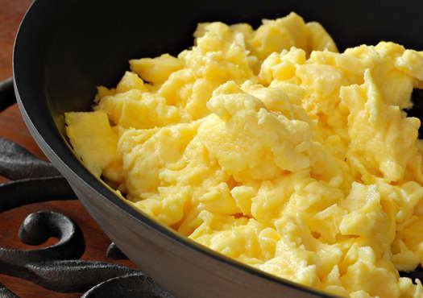

Ingridientai:
|
Gaminame.
|
 |
Gerai iškepta kiaušinienė turi būti „drėgna“, be rudų dėmelių.
Plakta kiaušinienė patiekiama su mėgstamomis daržovėmis ir duona.
Gali būti apibarstyta smulkintais žalumynais (krapais, svogūnų laiškais, petražolėmis).
Skanaus!